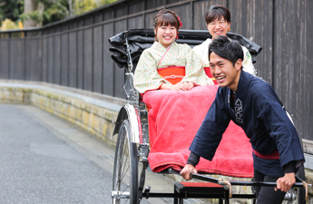
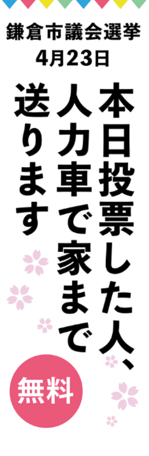

４月22日（土）、期日前投票を終えた方を人力車で自宅まで無料で送るイベントを開催致します。
鎌倉市民の皆さん、人力車に乗ったことはありますか？
鎌倉名物である人力車ではありますが、鎌倉に住んでいても「そういえば乗ったことはないなぁ」という方もいらっしゃるのでは...？？
せっかくの機会に投票に行って、人力車に乗ってみませんか？

協力：えびすや
開催場所：全期日前投票所（鎌倉市役所・大船、深沢、玉縄、腰越行政センター）周辺
こちらの「のぼり」が目印です！

※注意：人力車企画の実施日時は、4/22（土）10時～16時のみです。
ご希望の方は腕章をつけたスタッフまでお声がけ下さい！
↓↓このイベントにかける想いも説明させて頂きました。↓↓